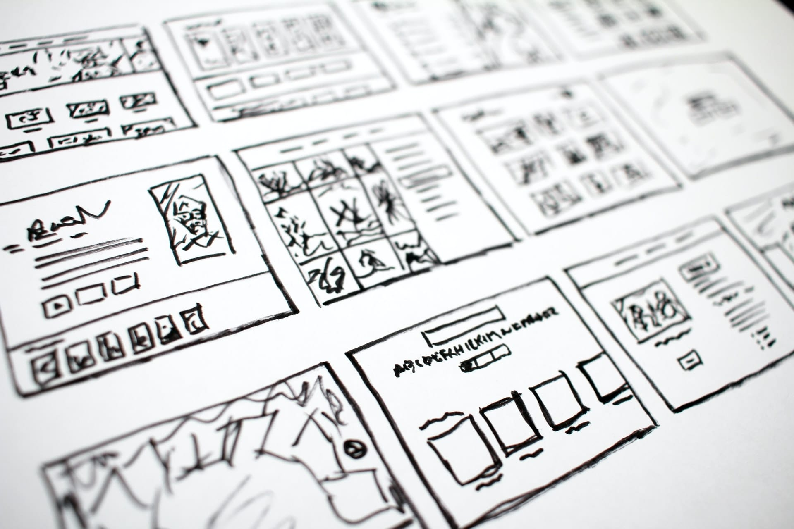

Learning Plan
What is your long term goal and/or career pathway?
I would like to work full-time as a developer, preferably working remotely from my home office. I am flexible around whether my next dev job is full-stack, front-end or back-end. I would prefer to work primarily with JavaScript-based technologies like vanilla JS, TypeScript, React, Angular and Node as they have been my main focus for the last while. But, if a great opportunity in WordPress development came up, I would be interested in that too. (My earlier experience was with WordPress development.)
A description of your own strengths and limitations in relation to learning.
You can find a detailed description in my earlier blog post: Identity, Values and Strengths Exploration.
What skills (non-technical - human skills) would you like to see developed in yourself while at Dev Academy?
The most valuable skills for me to develop in this learning context are the skills related to working as part of a dev team in an Agile environment, including:
- Participating effectively in Agile ceremonies
- Giving and receiving feedback on things like code and design ideas
- Improving team dynamics, practices and/or workflows
- Influencing/making suggestions to the team or a team member when I'm not in charge – without upsetting them (or stepping on the toes of the team lead if there is one)
A commitment to how you will manage your workload in this programme. This should include: An explanation of how you will manage yourself to work productively and safely with other learners, facilitators and industry/community representatives
I will manage myself to work productively with the team by:
- Always being on time and prepared for meetings
- Using time management tools and techniques including a calendar, time-block planning and task lists
- Removing distractions from my environment
- Focussing and staying on track
- Communicating with others kindly and empathetically
- Asking for help if I need it
- Not taking on any other commitments so that nothing else is competing with bootcamp for time and attention
- Taking especially good care of myself (see below) so that I am always in the best possible frame of mind to deal with anything that might come up
What you will do when things are building up and starting to get to you
During bootcamp, I will do my best to ensure that things don't overwhelm me by increasing my resilience. I will do this by taking especially good care of myself including:
- Getting enough sleep
- Eating well
- Exercising
- Practising some form of Non Sleep Deep Relaxation (NSDR) like yoga nidra or other mindfulness techniques
If things start to get to me, I'll do one or more of the following:
- Talk with a friend
- Go for a walk
- Use breathing techniques to regain calm
- De-stress by listening to some music
- Do some extra NSDR
A commitment as to how and where you will seek help in a timely way
If I am getting overwhelmed, I will talk to my facilitator about it. If there were any extenuating circumstances that prevented me from meeting a team commitment, I would contact my team ASAP to let them know and work out how to proceed.
A description of what you expect from the facilitation team
The types of input from the facilitation team that I think would be most useful to me are:
- Code review
-
Feedback on how I can:
- Improve how I work as part of a dev team
- Paricipate in Agile ceremonies better
- Give and receive feedback on code better
- Improve any other skills that my future employers will likely expect with regard to working as part of an Agile dev team.
- Providing an example to follow e.g. when one of the EDA staff takes the role of lead dev on the cohort project
- Helping or showing our teams how organise ourselves/run our projects in the way that a good professional dev team would
- Letting me know as early as possible if I am not meeting expectations or need to re-do any work